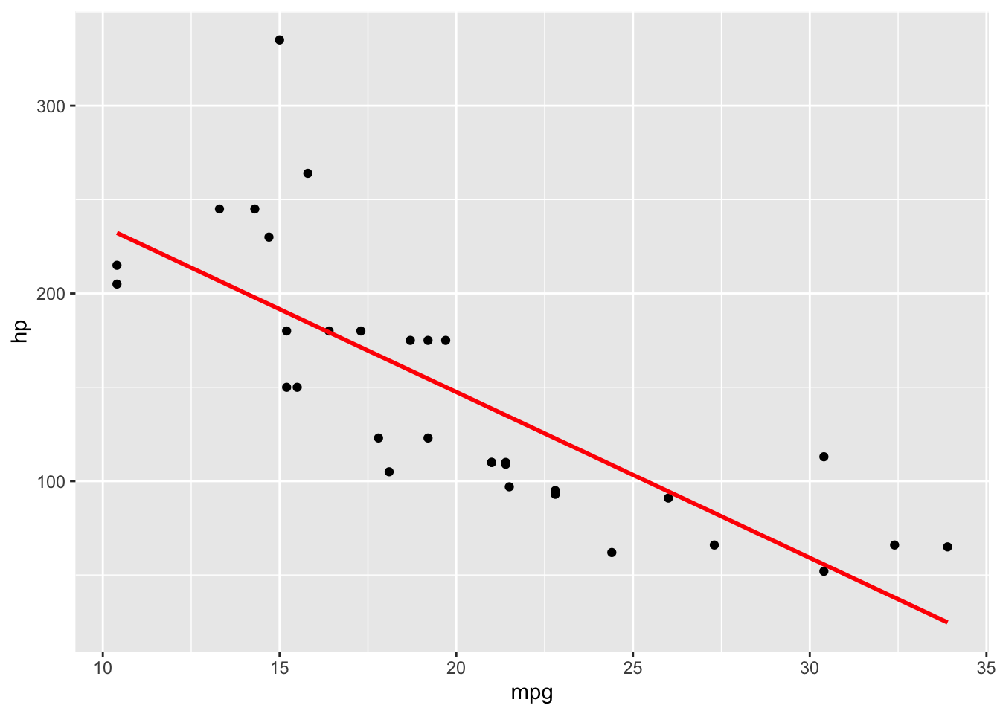
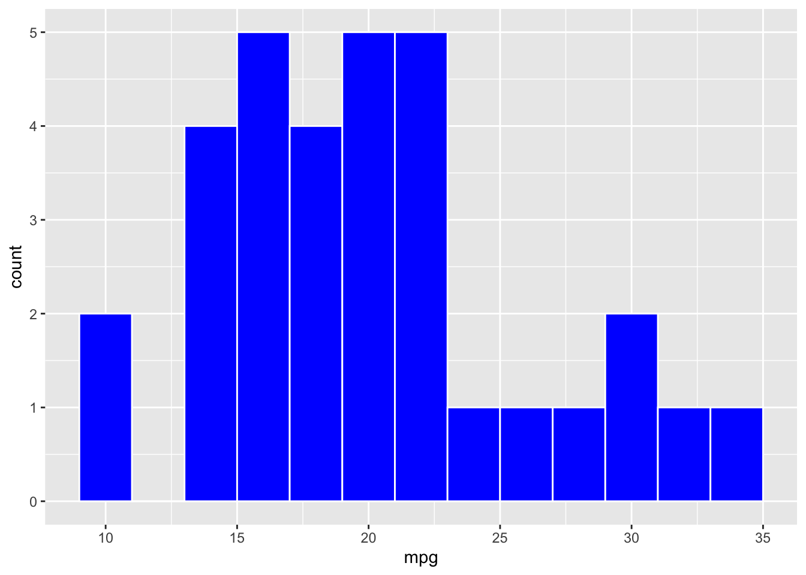
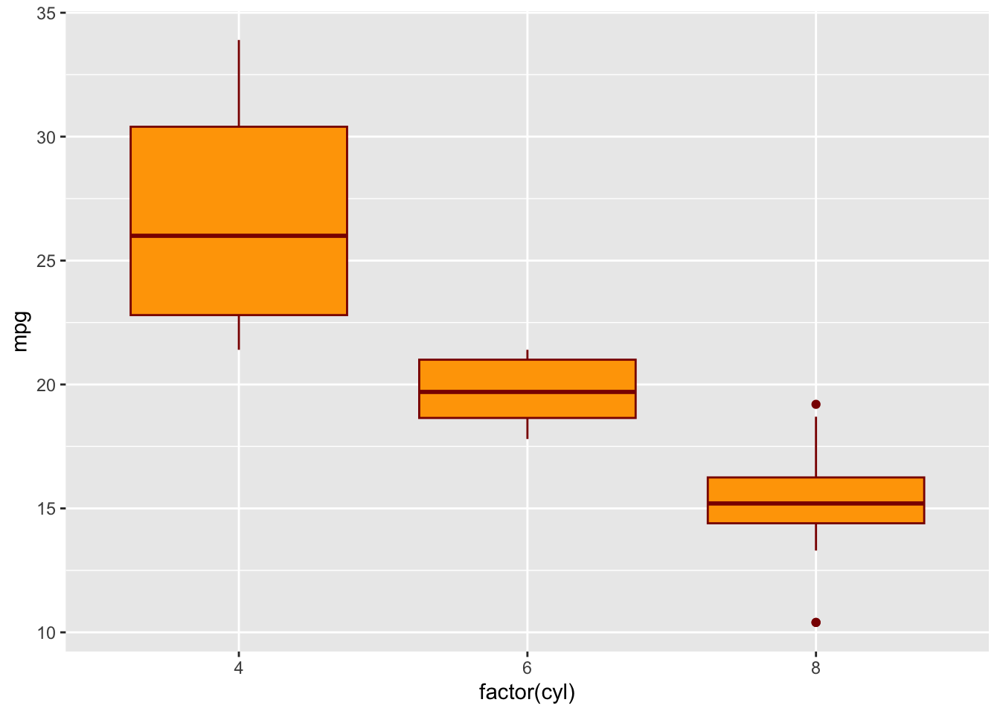
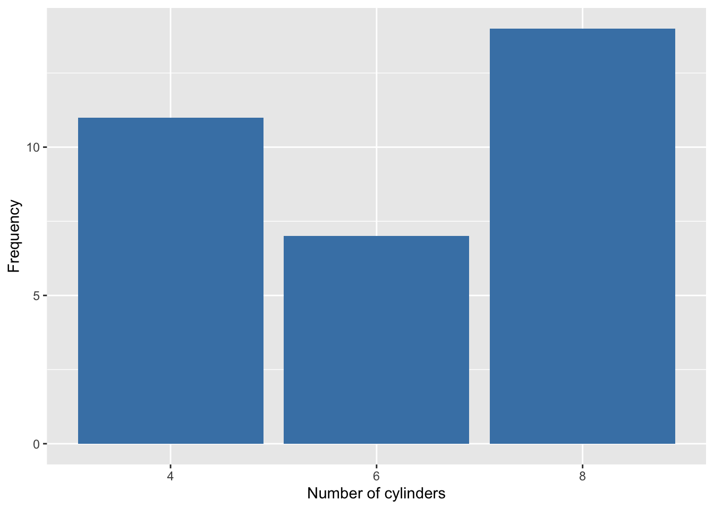

The tidyverse is a collection of R packages designed for data science.
All packages share an underlying design philosophy, grammar, and data structures.
It emphasizes tidy data in data frames, performs operations one step at a time, connects with pipes and makes code human readable.
Key Packages in tidyverse
readr: Used for importing data.
tidyr: Used for tidying and reshaping data.
dplyr: Used for data transformation.
ggplot2: Used for data visualization.
magrittr: Provides the pipe operator (%>%) or (|>) which is used to chain together sequences of operations.
Importing Data with readr
readr provides faster and consistent replacements for data import functions in base R.
It fits into the tidyverse naturally and extends neatly into other data types.
Example: read_csv(file, show_col_types = FALSE).
Tidying Data with tidyr
tidyr provides a set of functions that help to tidy data.
Tidy data is data where every column is a variable, every row is an observation, and every cell is a single value.
Transforming Data with dplyr
dplyr is a grammar of data manipulation, providing a consistent set of verbs that solve the most common data manipulation challenges.
Example: filter(data, condition).
Visualizing Data with ggplot2
ggplot2 is a system for declaratively creating graphics, based on “The Grammar of Graphics”.
You provide the data, tell ggplot2 how to map variables to aesthetics, what graphic to use, and it takes care of the details.
tidyr: pivot
# Load the tidyr packagelibrary(tidyr)# Assume we have a dataset 'data' with 'ID1', 'ID2', 'x', and 'y' columnsdata_ex1 <-tibble(ID1 =rep(LETTERS[1:4],times =3), ID2 =rep(letters[1:3], each =4), x =1:12, y =21:32)print(data_ex1)
# A tibble: 12 × 4
ID1 ID2 x y
<chr> <chr> <int> <int>
1 A a 1 21
2 B a 2 22
3 C a 3 23
4 D a 4 24
5 A b 5 25
6 B b 6 26
7 C b 7 27
8 D b 8 28
9 A c 9 29
10 B c 10 30
11 C c 11 31
12 D c 12 32
# Use pivot_longer() to convert wide data to long formatdata_long <- data_ex1 %>%pivot_longer(cols =c("x", "y"), names_to ="Variable", values_to ="Value")# Print the long format dataprint(data_long)
# A tibble: 24 × 4
ID1 ID2 Variable Value
<chr> <chr> <chr> <int>
1 A a x 1
2 A a y 21
3 B a x 2
4 B a y 22
5 C a x 3
6 C a y 23
7 D a x 4
8 D a y 24
9 A b x 5
10 A b y 25
# ℹ 14 more rows
# Use pivot_wider() to convert long data back to wide formatdata_wide <- data_long %>%pivot_wider(names_from = Variable,values_from = Value)# Print the wide format dataprint(data_wide)
# A tibble: 12 × 4
ID1 ID2 x y
<chr> <chr> <int> <int>
1 A a 1 21
2 B a 2 22
3 C a 3 23
4 D a 4 24
5 A b 5 25
6 B b 6 26
7 C b 7 27
8 D b 8 28
9 A c 9 29
10 B c 10 30
11 C c 11 31
12 D c 12 32
In this example, pivot_longer is used to convert the wide format data to long format, where each row is a single observation associated with the variables ID1, ID2, Variable (containing the original column names ‘x’ and ‘y’), and Value (containing the values from ‘x’ and ‘y’ columns). We can then also convert back to wide format using pivot_wider.
tidyr: separate
# Load the tidyr packagelibrary(tidyr)# Assume we have a dataset 'dataNew' with a 'datetime' columndata_ex2 <-tibble(datetime =c("2016-01-01 07:30:29", "2016-01-02 09:43:36", "2016-01-03 13:59:00"), event =c("u", "a", "l"))# Use the separate() function from tidyr to separate the 'datetime' column into # 'date' and 'time'# Then separate 'time' into 'hour', 'min', 'second'data_sep <- data_ex2 %>%separate(datetime, c('date', 'time'), sep =' ') %>%separate(time, c('hour', 'min', 'second'), sep =':')# Print the new datasetprint(data_sep)
# A tibble: 3 × 5
date hour min second event
<chr> <chr> <chr> <chr> <chr>
1 2016-01-01 07 30 29 u
2 2016-01-02 09 43 36 a
3 2016-01-03 13 59 00 l
# change hour, min, second to numeric valueslibrary(dplyr)
Attaching package: 'dplyr'
The following objects are masked from 'package:stats':
filter, lag
The following objects are masked from 'package:base':
intersect, setdiff, setequal, union
# A tibble: 3 × 5
date hour min second event
<chr> <dbl> <dbl> <dbl> <chr>
1 2016-01-01 7 30 29 u
2 2016-01-02 9 43 36 a
3 2016-01-03 13 59 0 l
Example: dplyr
# Load the dplyr packagelibrary(dplyr)# Assume we have a dataset 'data' with 'ID', 'Age', 'Gender', and 'Income' columnsdata_ex3 <-tibble(ID =1:4, Age =c(21, 35, 58, 40), Gender =c("Male", "Female", "Male", "Female"), Income =c(50000, 80000, 120000, 75000))# Use select() to choose the 'ID' and 'Age' columnsselected_data <- data_ex3 %>%select(ID, Age)selected_data
# A tibble: 4 × 2
ID Age
<int> <dbl>
1 1 21
2 2 35
3 3 58
4 4 40
# Use filter() to get rows where 'Age' is greater than 30filtered_data <- data_ex3 %>%filter(Age >30)filtered_data
# A tibble: 3 × 4
ID Age Gender Income
<int> <dbl> <chr> <dbl>
1 2 35 Female 80000
2 3 58 Male 120000
3 4 40 Female 75000
# Use mutate() to create a new column 'IncomeInThousands'mutated_data <- data_ex3 %>%mutate(IncomeInThousands = Income /1000)mutated_data
# A tibble: 4 × 5
ID Age Gender Income IncomeInThousands
<int> <dbl> <chr> <dbl> <dbl>
1 1 21 Male 50000 50
2 2 35 Female 80000 80
3 3 58 Male 120000 120
4 4 40 Female 75000 75
# Use arrange() to sort data by 'Income'arranged_data <- data_ex3 %>%arrange(Income)arranged_data
# A tibble: 4 × 4
ID Age Gender Income
<int> <dbl> <chr> <dbl>
1 1 21 Male 50000
2 4 40 Female 75000
3 2 35 Female 80000
4 3 58 Male 120000
# Use summarise() to get the mean 'Income'summary_data <- data_ex3 %>%summarise(MeanIncome =mean(Income))summary_data
# A tibble: 1 × 1
MeanIncome
<dbl>
1 81250
# Use group_by() and summarise() to get the mean 'Income' for each 'Gender'grouped_data <- data_ex3 %>%group_by(Gender) %>%summarise(MeanIncome =mean(Income))grouped_data
# A tibble: 2 × 2
Gender MeanIncome
<chr> <dbl>
1 Female 77500
2 Male 85000
In these examples, select is used to choose specific columns, filter is used to select rows based on a condition, mutate is used to create a new column, arrange is used to sort data, summarise is used to calculate summary statistics, and group_by is used to perform operations on groups of data.
Example: ggplot
Basic scatter plot with a regression line
# Load the ggplot2 packagelibrary(ggplot2)p1 <-ggplot(mtcars, aes(x = mpg, y = hp)) +geom_point() +geom_smooth(method ="lm", se =FALSE, color ="red")p1
`geom_smooth()` using formula = 'y ~ x'

Histogram
# Load the ggplot2 packagelibrary(ggplot2)p2 <-ggplot(mtcars, aes(x = mpg)) +geom_histogram(binwidth =2, fill ="blue", color ="white")p2

Boxplot
# Load the ggplot2 packagelibrary(ggplot2)p3 <-ggplot(mtcars, aes(x =factor(cyl), y = mpg)) +geom_boxplot(fill ="orange", color ="darkred")p3

Bar chart
# Load the ggplot2 packagelibrary(ggplot2)p4 <-ggplot(mtcars, aes(x =factor(cyl))) +geom_bar(fill ="steelblue") +labs(x ="Number of cylinders", y ="Frequency")p4

In these examples, geom_point is used to create a scatter plot, geom_smooth with method = "lm" is used to add a linear regression line, geom_histogram is used to create a histogram, geom_boxplot is used to create a boxplot, and geom_bar is used to create a bar chart.
Question
Suppose we have a dataset called penguins and suppose we would like to study how the ratio of penguin body mass to flipper size differs across the species in the dataset. Rearrange the following steps in the pipeline into an order that accomplishes this goal.